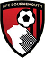

Provável Escalação
por FabioVascão
Atualizado em 29/Setembro/2022
Bournemouth
Ultimas Notícias
Lloyd Kelly (lesão no tornozelo) permanece de fora sem prazo definido para seu retorno, enquanto não está claro onde David Brooks está com sua reabilitação depois que ele sofreu uma lesão no tendão ao jogar pelo sub-23 no mês passado, após um longo período de afastamento. As notícias são bastante positivas em outros lugares, com Joe Rothwell (lesão na coxa) e Ben Pearson (lesão no joelho) "muito mais perto" de um retorno e Ryan Fredericks (não especificado) disse estar fazendo "grandes melhorias", embora não tenha ficado claro se o chefe interino Gary O'Neil estava excluindo completamente os três do jogo deste fim de semana ao enfrentar a mídia na quinta-feira. Os Cherries estão invictos em três partidas sob o comando de O'Neil, com a única mudança inicial do técnico interino naquele tempo sendo forçada (Marcos Senesi no lugar de Kelly) na 8° Rodada. Dada a forma da equipe atual e as contínuas dificuldades físicas de Kelly e dos demais, podemos esperar ver outra formação com poucas alterações neste fim de semana. Jogadores como Junior Stanislas, Jaidon Anthony e Kieffer Moore podem ter que permanecer enraizados no banco, junto com os reforços defensivos Jack Stacey e Jack Stephens.